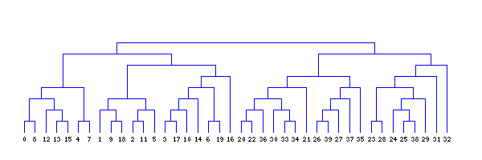
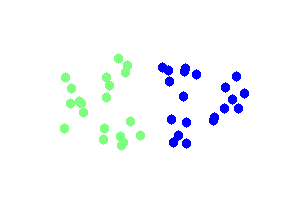

O(n2logn) hierarchical clustering Jun 7th, 2013
Hierarchical clustering is the process in which given a dissimilarity matrix between documents one has to join those that are most similar and update the matrix given an update strategy (single/complete link, group average, etc)
Naive case
The above process, in the general case, is of complexity O(n3) since we have to traverse n2 elements (in the matrix) and find their minimum and we have to do this n times. If one does code it this way, especially in PHP that is a relatively slow language, the maximum number of documents that can be clustered in a reasonable time (less than a day) is about 1000 (depending heavily on the computer).
Improving the general case
One could improve the general case of O(n3) simply by noticing that most of the time is spent looking for a minimum. If we use a heap instead of a matrix, then finding the minimum is an O(1) operation. Yet inserting and removing from the heap (as we updated the matrix previously) is an O(logn) operation and we have to do it n times for each merge. Thus the new complexity of the algorithm is now O(n2logn) which improves substantially the usefulness of the algorithm in php. (for instance if n=1000 we improve the running time approximately by 100).
As fast as possible
More than 40 years ago Mr. Sibson developed the SLINK algorithm for single link hierarchical clustering, based on a new mathematical representation of a dendrogram he devised an algorithm with time complexity O(n2). It is easily provable that no algorithm can be asymptotically faster than that. The SLINK algorithm, although easy to write in code, it deviates quite a lot from intuition in the sense that the algorithm does not merge two clusters n times untill all clusters are merged into one but instead it recursively updates the dendrogram from having i points to having i+1 points (thus the new dendrogram representation).
What is NlpTools using
PHP is a relatively slow language (captain obvious). The fastest algorithm possible should be used in order to achieve usable (or good) performance. That being said, NlpTools except for a toolkit and library for NLP, it also aims to be a good resource for introduction to machine learning and NLP algorithms. Thus, sometimes a simpler solution is chosen than the faster one.
The first implementation of hierarchical clustering in NlpTools will be using a custom made heap that makes it easy to understand what is going on in the Hierarchical class that implements the Clusterer interface and yet provides much better performance than the naive implementation.
What about SLINK and CLINK
Those algorithms will probably be added in the clustering namespace as two completely new classes that provide the same results as using Hierarchical with SingleLink and CompleteLink strategies accordingly. Top priority though is to implement yet more merge strategies like Ward and Centroid.
And a beautiful looking dendrogram?


The clustering above is done using single link hierarchical clustering with euclidean distance. The images were created using gd in php and the code is included in NlpTools as tests for the clustering namespace.